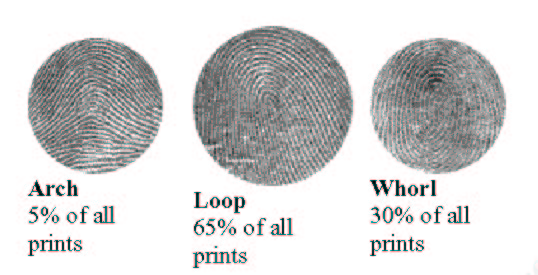
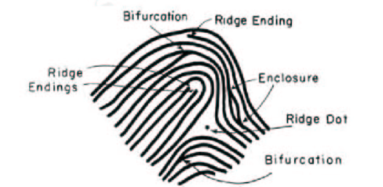

ชื่อ-สกุล : พรธิดา โพธิ์ใบ
รหัสนักศึกษา : 6204062620127
วัน/เดือน/ปีเกิด : 3 มกราคม 2544
จบจาก : โรงเรียนวิทยาศาสตร์จุฬาภรณราชวิทยาลัย ลพบุรี
ที่อยู่ : บ้านเลขที่ 12 หมู่ 6 ตำบลคลองจิก อำเภอบางปะอิน จังหวัด พระนครศรีอยุธยา 13160
เป้าหมายในชีวิต : เป็นโปรแกรมเมอร์ เรียนต่อปริญญาโท เที่ยวรอบโลก
| พิสูจน์ตัวตนด้วยลายนิ้วมือ : ปลอดภัยจริงหรือ ? เมื่อหลายเดือนที่ผ่านมา ผู้ที่ติดตามข่าวสารการเมืองคงยังจำข่าวการประชุมสภาฯ ที่มีการเสียบบัตรลงคะแนนแทนกันได้ และได้มีการกล่าวถึงการนำเครื่องตรวจลายนิ้วมือเข้ามาใช้แทนการเสียบบัตร แต่ติดปัญหาที่งบประมาณในการติดตั้งว่าสูงมาก (??!!) ก็เลยยังไม่สามารถปรับปรุงเรื่องนี้ได้ ในบทความนี้เราจะขอไม่กล่าวถึงความเป็นไปได้ในการติดตั้งระบบดังกล่าวด้วยค่าใช้จ่ายที่เหมาะสม เพราะคนที่อยู่ในวงการไอทีส่วนใหญ่ก็คงทราบแล้วว่า เทคโนโลยีในการพิสูจน์ตัวตนด้วยลายนิ้วมือนั้นมีมานานพอสมควรแล้ว จนในปัจจุบันไม่ใช่เรื่องของอุปกรณ์ที่มีราคาแพงแต่อย่างใด .... และด้วยเทคโนโลยีที่มีมาได้สักพักใหญ่ๆนี่แหละ จึงทำให้ไม่พ้นความสามารถของบรรดานักเจาะที่ตั้งเป้าหมายในการทะลวงระบบนี้ให้ได้ และนี่คือประเด็นของบทความนี้ ก่อนอื่น ขอท้าวความเกี่ยวกับเรื่องการพิสูจน์ตัวตนหรือ Authentication กันก่อน... การพิสูจน์ตัวตนคือการพิสูจน์เพื่อตรวจสอบว่าผู้ใช้คือบุคคลตัวจริง ซึ่งมีแนวทางในการพิสูจน์ 3 รูปแบบคือ
ซึ่งความยากง่ายในการขโมย หรือ ปลอมแปลงนั้น เป็นเรื่องที่ยอมรับได้ทันทีว่าแนวทางแรกจะง่ายที่สุด และ แนวทางที่ 3 จะยากที่สุด แต่จุดเสียของแนวทางที่ 3 ก็คือ มันเป็นข้อมูลที่ติดมากับตัวเรา นั่นก็หมายความว่า หากข้อมูลที่ว่านี้ได้ถูกปลอมแปลงไป เราจะไม่สามารถเปลี่ยนแปลงได้ ซึ่งตรงกันข้ามกับแนวทางที่ 1 และ 2 ซึ่งหากเราทราบ (หรือเพียงแต่สงสัย) ว่า ข้อมูลลับ หรือ เอกสารของเราได้ถูกปลอมแปลง หรือ ขโมยไป เราก็สามารถออกบัตร หรือ เปลี่ยน รหัสผ่านกันได้ .... แต่ถ้าลายนิ้วมือเราถูกปลอมไปแล้ว เราจะสร้างลายนิ้วมือใหม่ได้อย่างไรกัน ???!! และก่อนที่จะเล่าถึงวิธีการปลอมแปลงลายนิ้วมือ ที่เป็นข่าวเปิดเผยกันไปแล้ว ก็ขอย้อนความให้เห็นถึงวิธีการพิสูจน์ตัวตนด้วยลายนิ้วมือกันสักนิด เพื่อเป็นการปูพื้นให้เข้าใจวิธีการปลอมแปลงได้ง่ายขึ้น ทุกท่านคงทราบกันอยู่แล้วว่า มนุษย์ทุกคนจะมีลายนิ้วมือที่ไม่เหมือนกัน ลักษณะของลายนิ้วมือแบ่งหลัก ๆ ได้เป็น 3 ประเภท ตามรูปข้างล่างนี้ |
|  |
รูปแรก (Arch) เป็นลายนิ้วมือที่เส้นจะเริ่มจากนิ้วมือฝั่งหนึ่ง และไปสิ้นสุดที่อีกฝั่งหนึ่ง สำหรับการตรวจดูลายนิ้วมือ 2 รายการว่าเป็นลายเดียวกันหรือไม่นั้น มีหลากหลายวิธีด้วยกัน แต่วิธีที่เป็นที่นิยมกันมากที่สุด ได้แก่การเปรียบเทียบจุดสังเกตเล็ก ๆ (minutiae) จุดที่ว่านี้คือจุดที่เส้นลายนิ้วมือ (ridge)มาบรรจบกัน หรือ แยกออกจากกัน หรือ เป็นจุดจบของเส้น และจุดที่ว่านี้ของแต่ละคนจะไม่เหมือนกัน (FBI ได้สรุปแล้วว่า คนแต่ละคนจะมีไม่มีทางมีจุดสังเกตที่ว่านี้เหมือนกัน เกินกว่า 8 จุด) รูปข้างล่าง แสดงตัวอย่างของจุดที่ว่านี้ |
|  |
ตัวอย่างรายการของจุดสังเกต ได้แก่
ในการบันทึกลายนิ้วมือ ก็จะมีการบันทึกตำแหน่งของจุดสังเกตเหล่านี้ไว้ ซึ่งปกติแล้วจะบันทึกไว้ประมาณ 30-40 จุดต่อ 1 ลายนิ้วมือ และนำข้อมูลมาเปรียบเทียบกับลายนิ้วมือที่สแกนเข้ามาว่าตรงกันหรือไม่ ในปัจจุบัน อุปกรณ์ในการสแกนลายนิ้วมือ และซอฟต์แวร์ในการตรวจสอบ มีราคาถูกลงมาก และทำงานได้อย่างน่าเชื่อถือ จึงมีการนำมาใช้กันอย่างแพร่หลายมากขึ้น จึงเป็นที่หมายปองของบรรดานักแฮกเกอร์ที่เริ่มหันเหความสนใจในการเจาะข้อมูลมาหาทางในการปลอมลายนิ้วมือกันมากขึ้นไปด้วย และ รายแรกที่ออกมาเปิดเผยความสำเร็จในการปลอมแปลงได้แก่นักเจาะชาวญี่ปุ่น ซึ่งตีพิมพ์เอกสารเมื่อต้นปี 2002 ตามด้วยชาวเยอรมัน ในปลายปีเดียวกัน มาในปัจจุบัน วิธีการนี้เป็นที่เปิดเผยในเวปไซท์ทั่ว ๆ ไป ซึ่งจะขอสรุปวิธีการให้พอมองเห็นภาพได้ ดังนี้ แนวทางการปลอมลายนิ้วมือ เริ่มจากการหาลายนิ้วมือต้นฉบับให้ได้ก่อน ซึ่งก็เป็นวิธีเดียวกับที่เราเห็นในหนังที่ตำรวจใช้ คือ การใช้ผงกราไฟต์ พ่นไปยังวัสดุที่นิ้วนั้นไปจับต้อง เช่น แก้วน้ำ ลูกบิดประตู เป็นต้น จากนั้น ก็ถ่ายรูปลายนิ้วมือนี้ไว้ แล้วพิมพ์บนกระดาษโปร่งใส ด้วยเครื่องพิมพ์เลเซอร์ (และเนื่องจากรูปที่ถ่ายเป็นรูปแบบดิจิตอล เราจึงยังสามารถใช้ซอฟต์แวร์ช่วยแต่งภาพในส่วนที่ลบเลือนให้กระจ่างชัดขึ้นได้) ส่วนที่พิมพ์จะนูนออกมาพอที่จะไปใช้ในการทำพิมพ์แบบได้ เป้าหมายของบทความนี้ มีขึ้นเพื่อยืนยันว่าในโลกนี้ ไม่มีอะไรที่ปลอดภัย 100% โดยเฉพาะเมื่อเราใช้งานอย่างหละหลวม ดังนั้น การใช้ลายนิ้วมือในการพิสูจน์ตัวตน ก็คงเหมาะเพียงกับการใช้งานส่วนบุคคล เช่นใช้กับเครื่อง PDA หรือ ใช้กับงานที่ไม่จริงจังนัก สำหรับงานที่มีความสำคัญมาก ๆ หากจะใช้ลายนิ้วมือ ก็คงจะต้องผสมผสานกับการพิสูจน์ตัวตนในรูปแบบอื่นเข้าไปด้วย เช่น การใช้ควบคู่กับรหัสลับ หรือ PIN เป็นต้น เพียงเท่านี้ ก็คงจะสร้างความปลอดภัยให้เกิดขึ้นได้อีกระดับหนึ่งแล้ว |
เอกสารอ้างอิง : Yevgeniy Libov, Biometrics: Technology that Gives You a Password You Can't Share. May 24, 05 แหล่งที่มาของบทความ : http://www.cs.tu.ac.th/uploads/upfiles/files/file/article/fingerprint.htm |